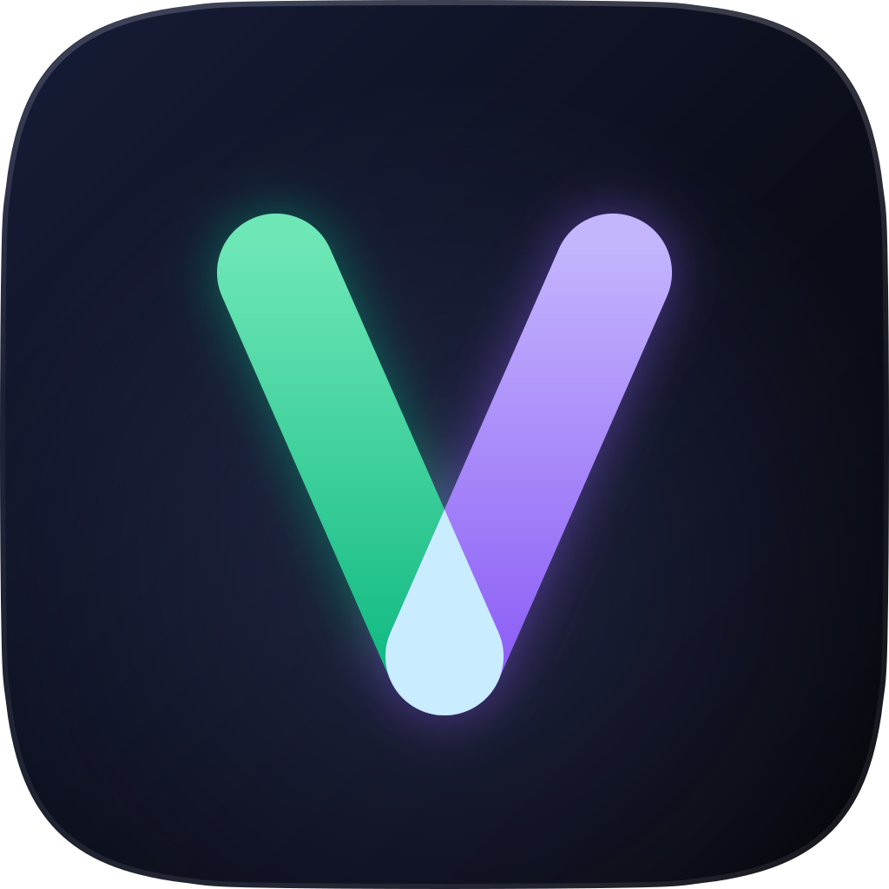

How to show lyrics on your Discord status
Discord can't show lyrics by itself: its Spotify connection shows the song, never the words. Here is how to put the line being sung on your Discord profile, with the next one under it, for Spotify, YouTube, Apple Music and most players on Windows. It takes about a minute and costs nothing.
The short version. Install Vybecord, a free app for Windows, open the Discord desktop app and play a song. Your status follows the lyrics on its own.
What you need
- A PC with Windows 10 (version 1809 or later) or Windows 11, 64-bit.
- The Discord desktop app, running on the same PC. Discord in a browser can't show it.
- Something to play: Spotify, YouTube in a browser, Apple Music, Deezer, Tidal, VLC and more. No Spotify Premium and no account needed.
Show your lyrics in four steps
- Download Vybecord. It's free and open source: download the installer, one file from the project's GitHub releases.
- Run the installer. Windows may say it protected your PC, because the installer isn't code-signed. Choose More info, then Run anyway.
- Open the Discord desktop app. In Discord, under User Settings → Activity Privacy, check that Display current activity is on.
- Play a song. Your Discord status updates on its own: the line being sung shows on your profile with the next one under it, and moves with the song. Vybecord's Now playing page shows your card the way your friends see it.
Spotify: use Spotify's own synced lyrics
Spotify works as soon as Vybecord runs, with lyrics found on LRCLIB, Netease and Musixmatch. To get Spotify's own synced lyrics when a song has them, add the optional Spicetify extension: install Spicetify, then in Vybecord choose Settings → Integrations → Spotify → Set up automatically. Spotify restarts once. It also brings instant track changes, every artist and the playlist you're in.
YouTube, YouTube Music and other sites
Music and videos playing in Chrome, Edge, Firefox, Brave, Opera, Vivaldi or Zen work with nothing to add. When a song has no synced lyrics anywhere, Vybecord can use the video's YouTube captions instead.
The optional browser extension tells YouTube, YouTube Music, SoundCloud, Bandcamp, Twitch and Kick apart, links your card to the track and reads the exact position from the page. It comes with the app: Settings → Integrations → Browser extension.
Apple Music, Deezer, Tidal, VLC and other players
If a player shows its song in the Windows volume overlay when you press a media key, Vybecord sees it too: Apple Music, Deezer, Tidal, Amazon Music, VLC, foobar2000, MusicBee, AIMP, Winamp and MediaMonkey all work. Windows Media Player, Groove Music, Movies & TV and the SoundCloud app from the Microsoft Store don't.
If something isn't right
Your status doesn't show on Discord
On Now playing, click Why?, top right. It checks everything between the song and your card, says what is in the way and offers a button to fix it. The Discord desktop app has to be running; the bottom of Vybecord's sidebar says whether it is connected.
A song has no lyrics
Some songs have no synced lyrics published anywhere, and a browser title like "Artist - Title
(Official Video)" matches less reliably. You can add your own: Lyrics → Add lyrics takes
a timed .lrc file or plain text, which Sync while playing lets you time against the song.
The lyrics are out of sync
Use the −250 / +250 buttons under the lyrics on Now playing. The offset is saved for that song only, so it is right again the next time it plays.
The lyrics are wrong
Click Wrong lyrics? under the lyrics. The words are wrong never uses that result for the song again and tries the next source. The timing is off opens the lines in the editor so you can re-time them and keep your own copy.
Is it safe for my Discord account?
Vybecord uses Rich Presence, the feature Discord made for apps and games to show what you're doing, through the Discord app on your own PC. It never asks for your login or your token, it isn't a client mod or a plugin (no BetterDiscord, no Vencord), and it doesn't touch your custom status. There is no account and no telemetry; the privacy policy lists everything it sends.
Make the card your own
On Now playing, click any part of your Discord card to change it: what its lines show, the verb (Listening, Watching, Playing or Competing), the small icon on the cover and a button of your own. Settings → Discord presence → Several presences shows up to five cards at once, such as Spotify on one and a Twitch stream on another.

Put your lyrics on your profile
Free, for Windows 10 and 11, with nothing to sign in to.